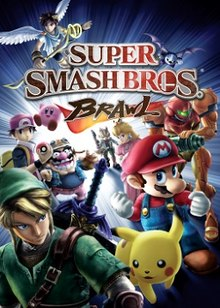

Pers nal Connectin
nal Connectin
Why Do You Love This Game?
I grew up with the Nintendo Wii and my favourite game we had on that console was Super Smash Bros Brawl. It was nowhere near perfect (as I would learn later) but i fell in love with the characters and fighting style of the game. I didn't have a Wii U which housed the game generally known as Smash 4 but when Ultimate came out for the Switch I loved it. The fighting style is unique and it feels amazing to send people flying with a strong attack. Also the vast cast of famous characters lets you pick and choose who you want to play and allows for many different play styles.
Experiences
Most of my experiences are playing with my brother and losing most of the time. I have many fond memories of playing against someone online and spiking them (risky move that sends them straight down) into the blast zone and winning. I also love the Single Player mode, World of Light , right now I'm doing a no-spirit run which basically means I deal little damage and I lose quickly. Overall my experiences have been good and that is what drives me to come back to the game and keep playing.